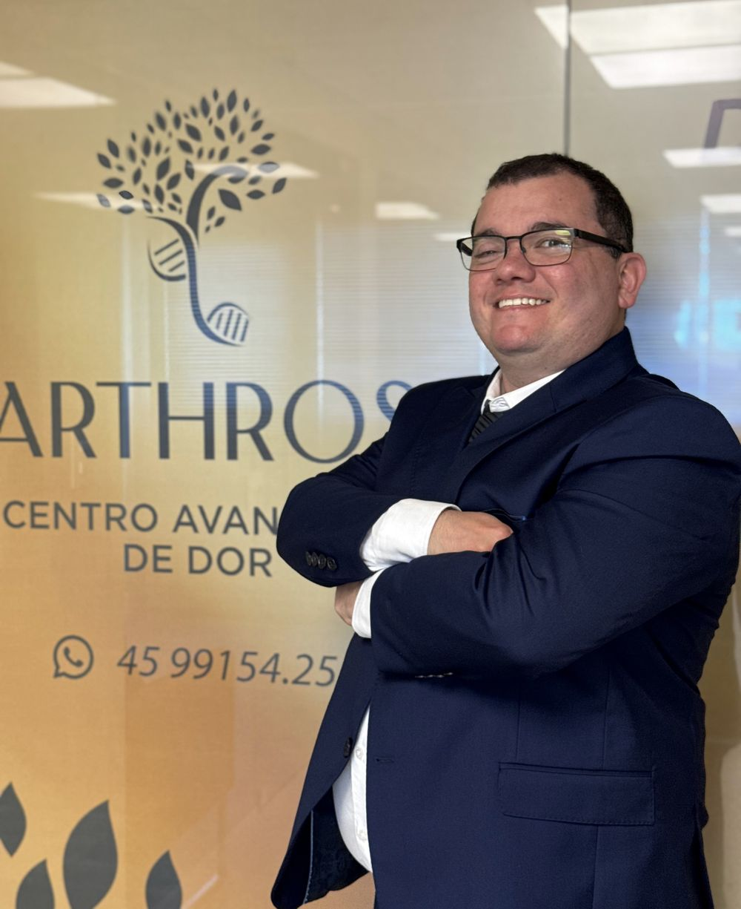
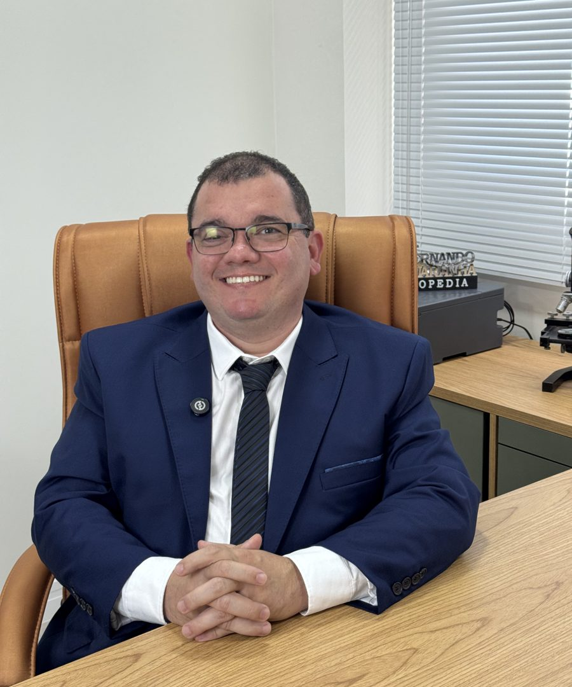

Quem trabalha no campo ou na obra
Carrego peso o dia inteiro e a lombar já não aguenta como antes.
- Lombar
- Ombro
- Joelho
Ortopedista em Cascavel · Arthros
Remédio que só cala a dor por uns dias não resolve. Sou ortopedista em Cascavel e, na Arthros, a gente investiga de onde ela vem, alivia com precisão e reconstrói o movimento para ela não voltar.

Dor na coluna, no ombro, no joelho ou no cotovelo é o que mais chega ao consultório em Cascavel. Escolha a região e toque no que você sente. As linhas mostram o que costuma estar por baixo. Quem confirma a causa é a avaliação.
Procure um pronto-atendimento se a dor vier com perda de força súbita na perna ou no braço, dificuldade para urinar ou evacuar, ou depois de uma queda forte.

Muita gente chega achando que dor é coisa da idade e que vai ter que conviver com ela. Na maioria das vezes, dá para fazer muito mais.
Sou ortopedista e traumatologista e fundei a Arthros, em Cascavel, para cuidar de quem sente dor com tempo para escutar, diagnóstico preciso e um plano que respeita o seu ritmo.
O nome vem de arthron, articulação em grego. E o símbolo da clínica é uma árvore porque é assim que eu enxergo o tratamento: raiz firme primeiro, movimento depois.
A dor é o que aparece na superfície. Ela avisa, mas quase nunca explica. Enquanto só ela for tratada, ela volta. Por isso o meu trabalho começa embaixo dela, na causa.
Três etapas, na ordem em que uma árvore se firma: primeiro a raiz, depois o tronco, depois a copa.
Conversa sem pressa, exame físico e ultrassom no consultório quando ajuda. Saber de onde a dor vem é a parte mais importante do tratamento.
Medicação certa e, se indicado, infiltração ou bloqueio guiado por imagem, feitos no consultório e com volta para casa no mesmo dia.
Com a dor sob controle, a reabilitação e o fortalecimento acontecem de verdade. Os retornos ajustam o plano até a rotina voltar.
Marque o que acontece com você. Não é diagnóstico, é um jeito honesto de saber se vale procurar uma avaliação agora.
Marque os sinais ao lado.
O ultrassom atravessa as camadas do corpo e mostra tendões, bursas e articulações em movimento. Em dores de ombro, joelho e cotovelo, muitas vezes você já sai da consulta sabendo o que tem.
A dor muda de cara conforme a rotina de cada um. O cuidado também.
Carrego peso o dia inteiro e a lombar já não aguenta como antes.
Escritório, carro, computador. No fim do dia, as costas e o pescoço cobram.
Parei o treino por causa do joelho e não quero perder o que conquistei.
Minha mãe deixou de caminhar como antes e já não quer sair de casa.
Nem todo paciente precisa de procedimento. Quando indicado, é feito no consultório, com anestesia local e sem internação.
Exame feito pelo próprio médico, durante a consulta. Mostra tendões, bursas, ligamentos e líquido na articulação em movimento.
Medicamento aplicado dentro ou ao redor da articulação, com a agulha acompanhada pelo ultrassom até o ponto certo. Controla inflamação e dor em tendinites, bursites e artrose.
Anestésico e anti-inflamatório aplicados perto das estruturas da coluna ligadas à dor. Além de tratar, ajudam a confirmar de onde a dor vem.
Bloqueia a condução da dor em um nervo específico da região, para dar conforto suficiente à reabilitação.
Controle da dor, procedimentos na articulação e orientação de fortalecimento, para preservar a função e adiar ou evitar a cirurgia quando possível.
Para contraturas e dores musculares que voltam com frequência. Combina procedimentos locais com orientação de postura e exercício.
Cada cartão traz uma frase que muita gente repete. Cave até a raiz para ver o que a medicina diz.
O consultório fica no Dom Medical Center, no Centro de Cascavel, com acesso fácil para quem vem de qualquer bairro e das cidades da região, com estacionamento para pacientes e serviços de saúde no mesmo prédio.
 Dom Medical Center
Dom Medical CenterAtendemos pacientes de Cascavel e de toda a região oeste do Paraná. Muita gente vem de cidades vizinhas para consulta e procedimento no mesmo dia.
R. Visconde de Guarapuava, 1717, no Centro.
Estacionamento para pacientes na entrada.
Acessível para quem tem dificuldade de locomoção.
Procure a porta de vidro dourada da Arthros.
 É esta porta
É esta portaQuem chega com a história da dor organizada aproveita muito mais a consulta. Responda abaixo e a sua ficha fica pronta para mandar para a equipe ou mostrar no dia.
Não achou a sua dúvida? A equipe responde pelo WhatsApp.
No Dom Medical Center, Rua Visconde de Guarapuava, 1717, sala 609, no Centro de Cascavel. O prédio tem estacionamento para pacientes.
Não. Você pode agendar direto pelo WhatsApp e contar um pouco da sua dor para a equipe já se preparar.
Os exames de imagem que já tiver (raio-X, ressonância, ultrassom) e a lista dos remédios que usa. Se faltar algum exame, ele é pedido na consulta.
É feita com anestesia local e agulha fina, guiada por imagem. A maioria das pessoas descreve um desconforto rápido, e cada etapa é explicada antes de começar.
A maior parte das dores de coluna, ombro e joelho é tratada sem cirurgia. Se a avaliação mostrar que a cirurgia é o melhor caminho, você recebe essa informação com clareza e o encaminhamento adequado.
Depende da causa, do procedimento e de quanto a reabilitação é feita nesse período. Por isso ele vem sempre dentro de um plano, com retorno marcado.
Conte onde dói, quanto dói e há quanto tempo. A equipe recebe o seu caso pelo WhatsApp e encontra um horário.
(45) 99154-2530